TeamViewer 를 이용한 원격제어
TeamViewer 는 원격 컴퓨터 제어 프로그램으로 비상업적 목적일 경우 무료 라이선스로 사용할 수 있습니다. 영리 목적 사용을 위한 라이선스 구매는 www.teamviewer.com 홈페이지를 통해 가능합니다.
Note
아래에 설명된 TeamViewer 설치 및 사용방법에 어려움이 있을 경우 언제든지 엔토스에 문의하여 기술 지원을 받으시기 바랍니다.
PC 프로그램 다운로드 및 설치
www.teamviewer.com 에 접속하여 다운로드 버튼을 누르고 사용하는 운영체제에 맞는 설치 파일을 받아 실행합니다.
기본 설정 이외에 자세한 내용은 www.teamviewer.com 을 참조하십시요.
MFPlayer 업그레이드
TeamViewer 사의 정책에 따라 MFPlayer 에 설치된 TeamViewer 프로그램의 업그레이드가 필요할 경우 접속이 안될수가 있습니다.
버젼 문제가 발생하면 MFPlayer 에 설치된 TeamViewer 를 터미널 창을 이용하여 수동으로 업그레이드 해야 합니다.
MFPlayer 하단에 있는 터미널 아이콘을 클릭합니다.
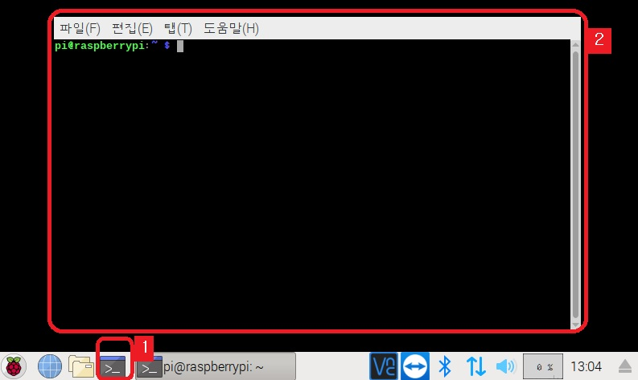
터미널 창이 나타나면 아래 첫번째 명령어를 입력합니다.
wget https://download.teamviewer.com/download/linux/teamviewer-host_armhf.deb
명령어 실행 결과는 아래와 같습니다.
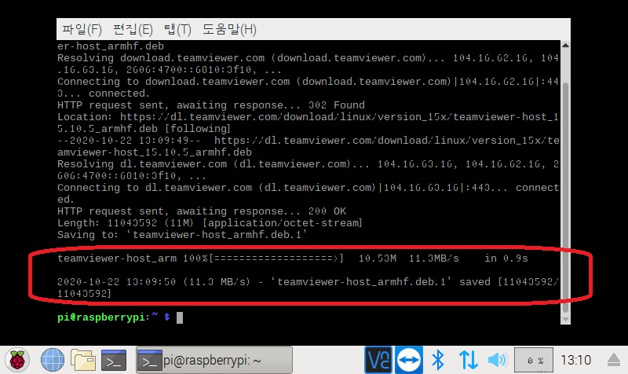
이어서 두번째 명령어를 입력합니다.
sudo dpkg -i teamviewer-host_armhf.deb
결과는 아래와 같습니다.
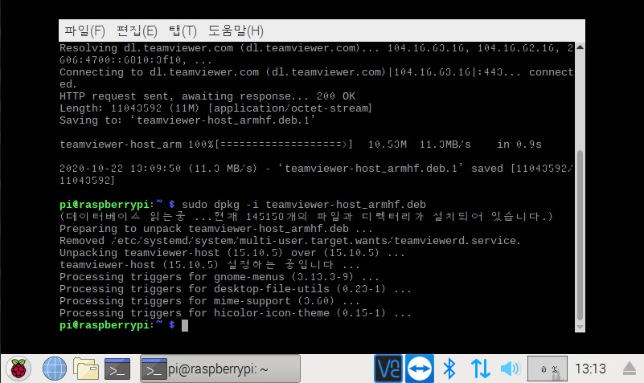
MFPlayer TeamViewer 의 비밀번호 설정
소형 MFPlayer 의 TeamViewer 비밀번호를 설정하려면 키보드가 필요합니다. 키보드를 MFPlayer 의 USB 포트에 연결한뒤 진행합니다.
화면 하단의 TeamViewer 아이콘을 클릭해 TeamViewer 정보 화면을 띄운뒤에 설정 아이콘을 클릭합니다.
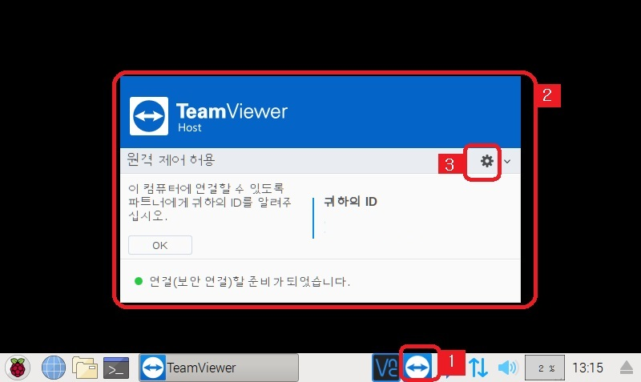
보안 > 비밀번호 변경을 클릭합니다경
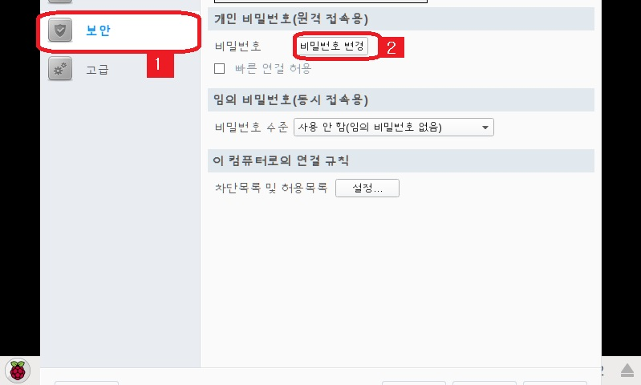
MFPlayer 의 제어 화면이 작아 비밀번호 설정후 완료 버튼을 누를수 없는 문제가 있습니다.
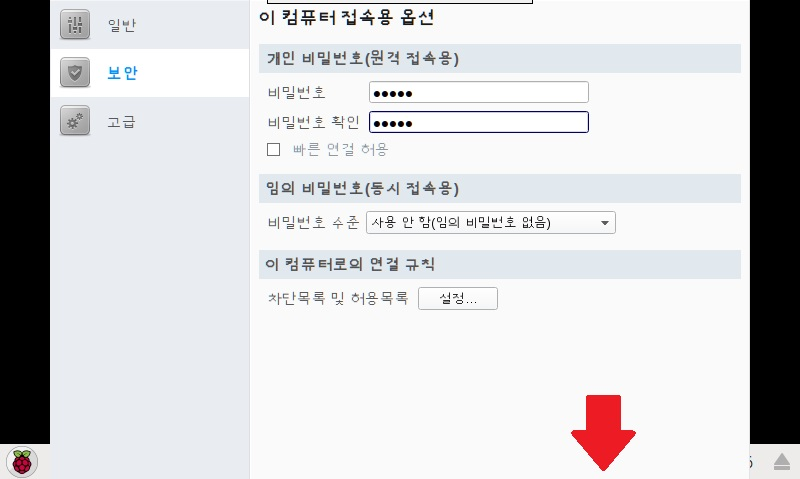
비밀번호 확인란에서 키보드의 Tab 키를 4 회 눌러 확인 버튼으로 이동한뒤에 다시 키보드의 Enther 키를 누르면 설정이 완료됩니다.
TeamViewer 접속
설치가 완료되면 TeamViewer 를 실행하고 엔토스 담당자에게 받은 ID 와 password 를 입력하여 MFPlayer 에 접속합니다.
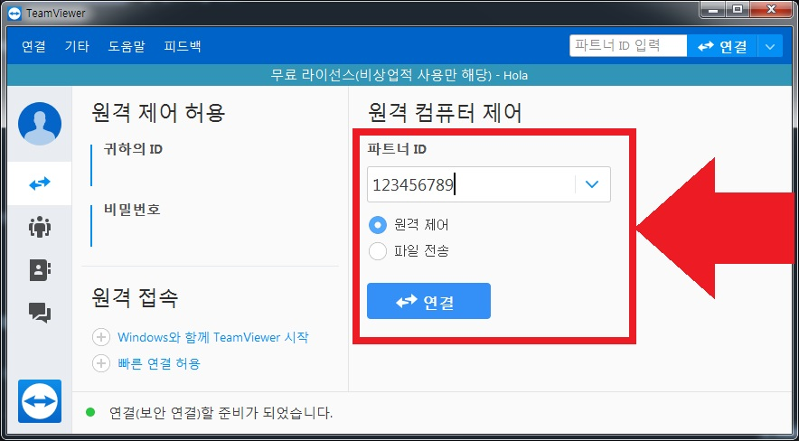
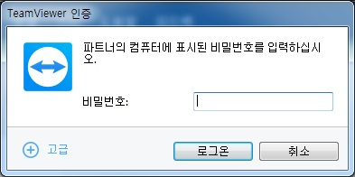
접속이 정상적으로 완료되면 아래와 같이 MFPlayer 제어화면이 나타납니다.
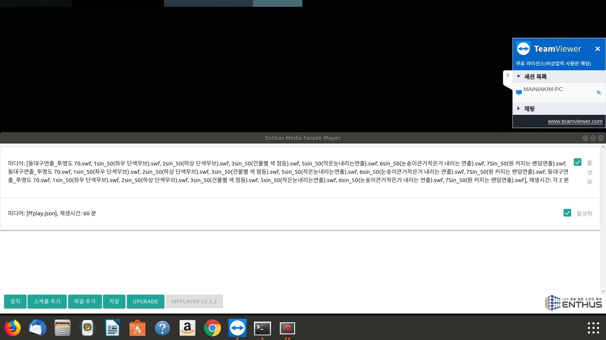
미디어 파일 전송
파일 전송 버튼을 눌르면 전송창이 나타납니다.
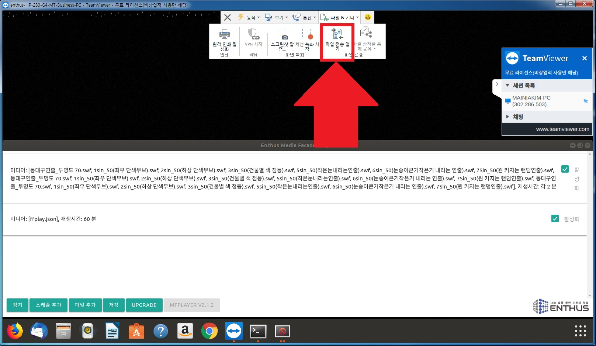
전송창의 왼쪽 부분은 내컴퓨터, 오른쪽은 MFPlayer 서버의 폴더입니다.
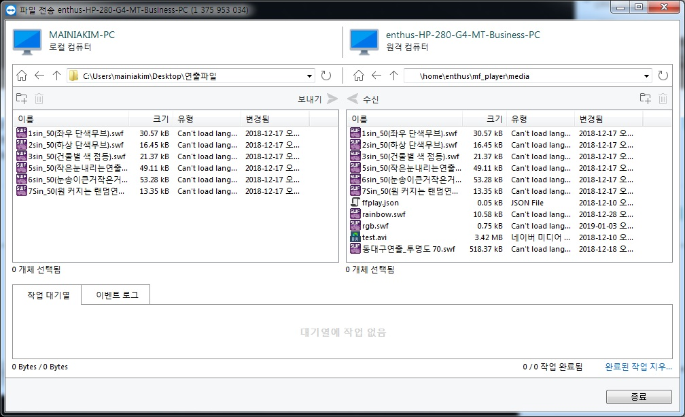
내컴퓨터에서 전송할 파일을 선택합니다.
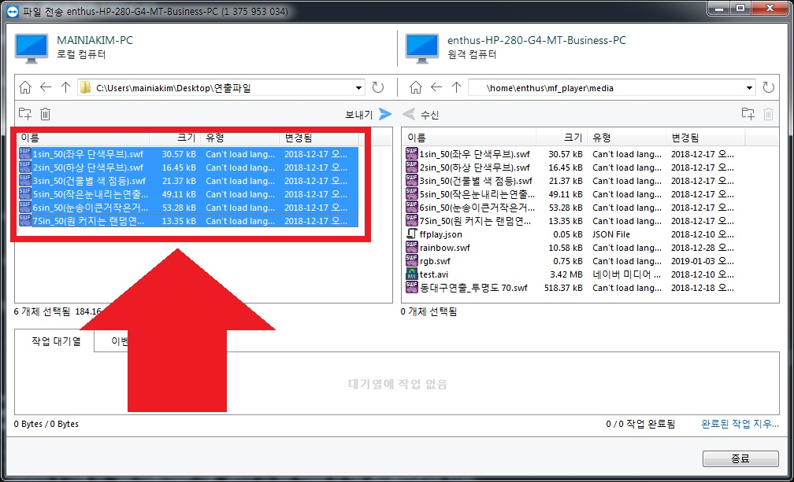
오른쪽 부분에서 /home/enthus/mf_player/media 폴더를 선택합니다.
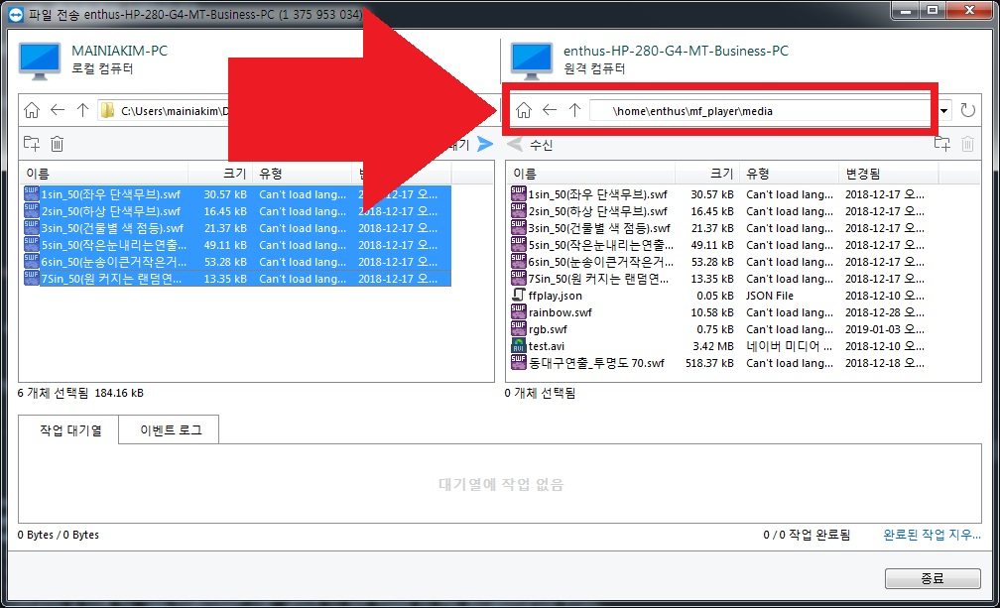
화살표 모양의 전송버튼을 누르면 왼쪽 아래 부분에 전송 상태가 표시되면서 진행이 되기 시작합니다.
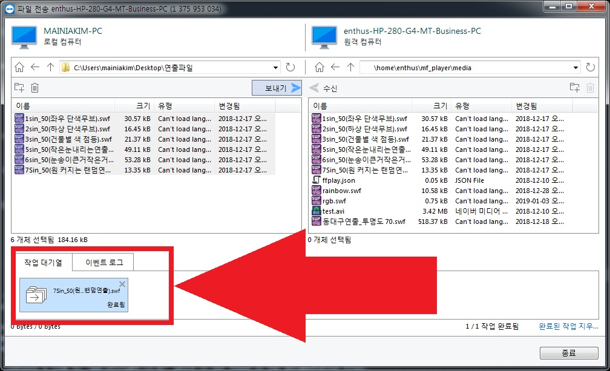
전송 파일 확인
스케쥴 편집의 미디어 선택 버튼을 누르면 전송이 완료된 파일들이 리스트로 표시됩니다. 미디어 파일을 선택하여 사용하는 방법은 이어지는 스케쥴 추가 / 편집 문서에서 확인하시기 바랍니다.